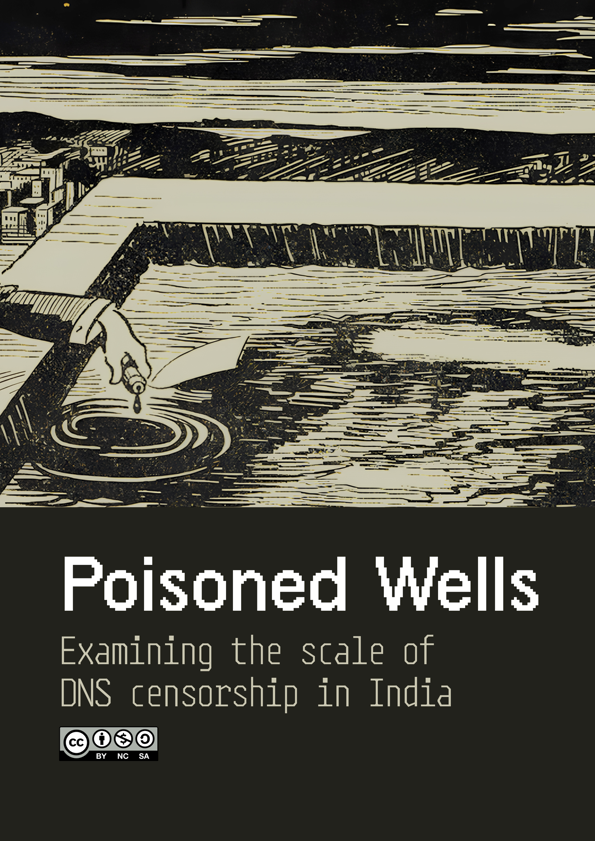

Methodology overview
This study employed DNS measurement collection to test 294 million registered domains across 6 major and regional Indian ISPs. Unlike previous studies which relied on curated lists of potentially blocked websites (PBWs), this study tested the entire visible domain space, identifying blocking through signature detection.
Direct and remote measurements
Deployed direct ISP connections for Reliance Jio, Bharti Airtel, and Atria Convergence Technologies (ACT), while identifying infrastructural resolvers for Mahanagar Telephone Nigam Ltd. (MTNL), Connect Broadband, and You Broadband. Queried 294 million domains per ISP at a reasonable queries per second (QPS) rate to avoid service degradation for legitimate users.
Blocking detection and validation
Identified forged IPs making up the unique blocking signatures for each ISP. Discerned DNS injection by ACT through queries to non-resolver IPs. Validated suspected blocks by collecting control measurements through third-party DNS providers.
Classification and analysis
Categorized the resulting blocklist with an expanded version of Citizen Lab's test list taxonomy using a mixed approach aided by open source, high-confidence, category-specific lists (GMB, PORN, MAL), manual classification, and machine learning. Enriched with popularity rankings from the Tranco List. Identified broad blocking patterns (both intended and those caused by misconfigurations) through analysis.
Interactive dataset explorer
Explore 43,083 blocked domains and their censorship status across six ISPs. Filter by ISP, category, TLD, or search specific domains. Includes Tranco popularity rankings.
Loading
Data and documentation
The compiled blocklist, raw DNS measurements, and project report are provided under the Creative Commons BY-NC-SA 4.0 license. The raw measurements consist of DNS queries in jsonl format with 294 million domains queried per ISP, totaling 1.76 billion queries.

Read the project report
Download the project report detailing the methodology, findings, and analysis of DNS censorship across Indian ISPs. A technical paper will be available in preprint soon.
Download reportSupported by
The Open Technology Fund supported this research through the Information Controls Research Program.
The Internet Governance Project was the host organization and provided institutional support and technical guidance through the School of Public Policy at the Georgia Institute of Technology.